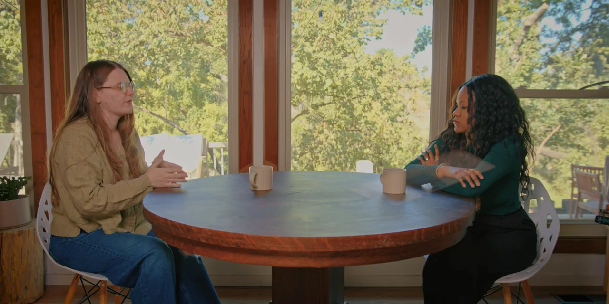
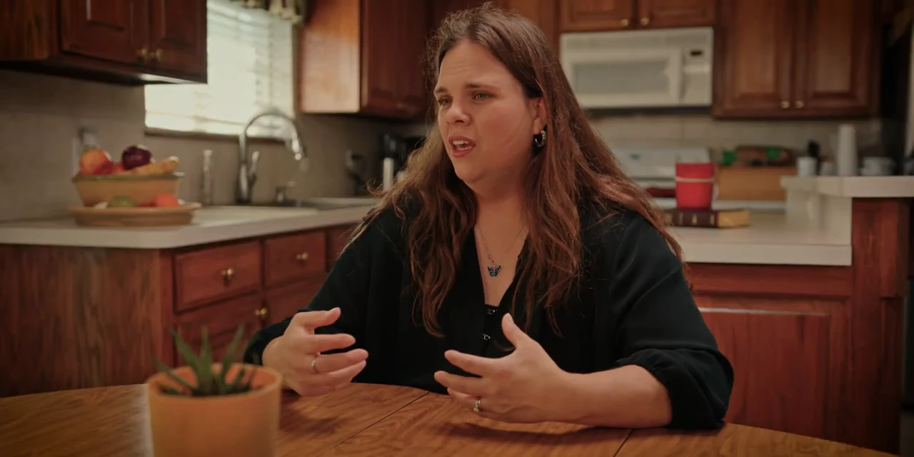
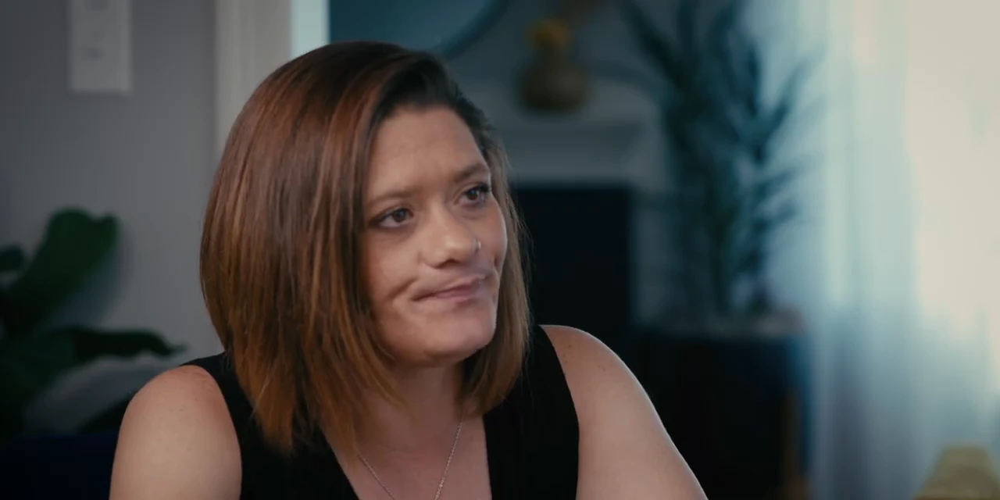
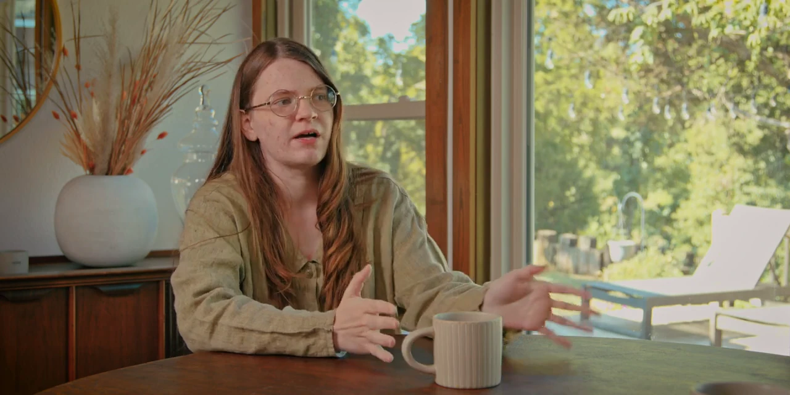
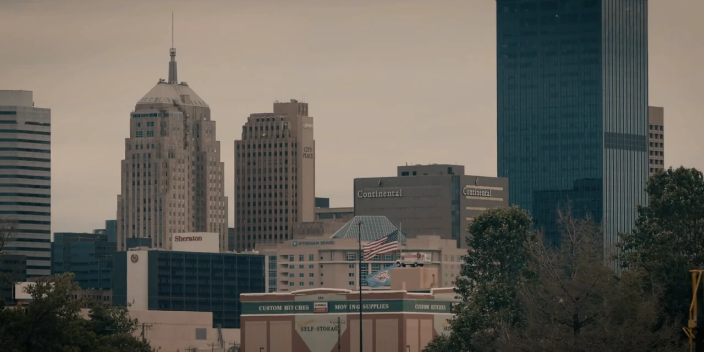

Released
Trans Oklahoma
Dark Sides of the Rainbow
Lived accounts of transition, detransition, family relationships and Christian faith.

About the film
Trans Oklahoma: Dark Sides of the Rainbow brings together Laura Perry Smalts, Lacey Rice and Zoe Hawes as they describe their own experiences of transition and detransition. Parents and a clinical psychologist add their perspectives on identity, family relationships and the decisions surrounding transition.
Directed by Janelle Batts, the documentary pairs interviews in their homes with personal photographs, Oklahoma landscapes and news material. Christian faith is central to several participants' stories, and the film takes a critical view of gender transition. Janelle Batts guides the account through early experiences, transition, family conflict and the participants' own accounts of finding a way forward.
From the film




Production
Directed by Janelle Batts. Director of photography Kevin Batts. Assistant director Gabe Woolley. First AD Nicole Clayton. Voice acting Sam White. RedRiver Creative Media production.